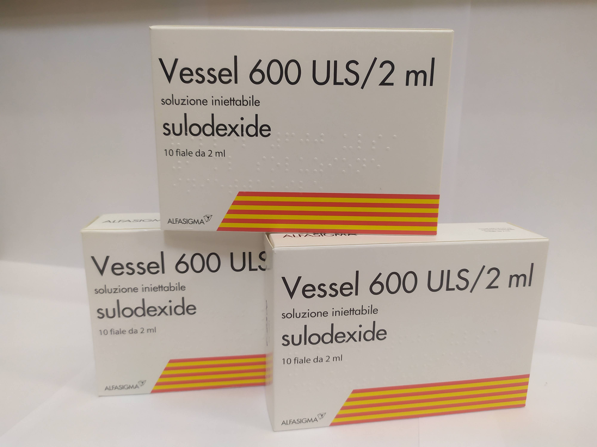

Контактна інформація:
Ціна: 1050 грн/уп.
В наявності
Виробник: Італія
Ціна: 1050 грн/уп.
В наявності
Саме в FarmItal ви можете купити вессел 600 УЛС / 2 мл №10 - vessel 600 ULS/ 2 ml №10 в Україні, Гарантовано Якісний!
Доставка vessel 600 ULS здійснюється транспортними компаніями, терміни виконання замовлення обумовлюються менеджером Фармітал. Ви можете замовити Вессел 600 УЛС(Дує ф) у містах: Одеса, Херсон, Чернігів, Сєверодонецьк, Бердянськ, Бровари, Дніпро, Вінниця, Київ, Слов'янськ, Полтава, Краматорськ, Біла Церква, Кам'янське, Маріуполь, Чернівці, Олександрія, Кам'янець-Подільський, Львів, Запоріжжя, Кропивницький, Житомир, Івано-Франківськ, Суми, Черкаси, Костянтинівка, Мелітополь, Кривий Ріг, Рівне, Луцьк, Нікополь, Павлоград, Ужгород, Кременчук, Лисичанськ, Хмельницький, Тернопіль, Харків, Миколаїв, а також в інших населених пунктах України.
Ампули з рідиною для ін'єкцій.
Розчин для ін'єкцій: світло-жовтий або жовтий прозорий розчин, поміщений у ампули із темного прозорого скла.
ангіопатії з підвищеним ризиком тромбоутворення, у т.ч. після перенесеного інфаркту міокарда; порушення мозкового кровообігу, включаючи гострий період ішемічного інсульту та період раннього відновлення; дисциркуляторна енцефалопатія, зумовлена атеросклерозом, цукровим діабетом, гіпертонічною хворобою; судинна деменція; оклюзійні ураження периферичних артерій атеросклеротичного та діабетичного генезу; флебопатії, тромбози глибоких вен; мікроангіопатії (нефропатія, ретинопатія, нейропатія) та макроангіопатії (синдром діабетичної стопи, енцефалопатія, кардіопатія) при цукровому діабеті; тромбофілічні стани, антифосфоліпідний синдром (спільно з ацетилсаліциловою кислотою, а також слідом за низькомолекулярними гепаринами); лікування гепарин-індукованої тромботичної тромбоцитопенії (ГТТ), оскільки препарат не викликає та не посилює ГТТ.
В/м, в/в (150–200 мл фізіологічного розчину), всередину. На початку лікування вміст 1 ампули вводити щодня внутрішньом'язово протягом 15-20 днів,На розсуд лікаря режим дозування може бути змінено.
Самолікування може бути шкідливим для вашого здоров'я! Перед початком лікування зверніться до вашого лікаря!!
У разі потреби рекомендується використовувати препарат під контролем коагулограми. На початку та наприкінці лікування доцільно визначати такі показники: АЧТВ (у нормі — 30–40 с, залежно від виду та концентрації використовуваного активатора може бути 25–30 або 35–50 с), вміст антитромбіну III (у нормі — 210–300 мг/л), час кровотечі (у нормі Дукою — 2–4 хв), час згортання нестабілізованої крові (у нормі методом Міліана в модифікації Моравиця — 6–8 хв). Вессел 600 ULS 2ml збільшує нормальні показники.
Симптоми: кровоточивість чи кровотеча.
Лікування: відміна препарату, симптоматична терапія.
При вагітності призначається під суворим наглядом лікаря. Є позитивний досвід застосування з метою лікування та профілактики судинних ускладнень у хворих на діабет типу 1 у II та III триместрах вагітності, при розвитку пізнього токсикозу вагітних – гестозу.
Не рекомендується одночасне застосування з препаратами, що впливають на систему гемостазу (прямі та непрямі антикоагулянти, антиагреганти).
Зберігати у недоступному для дітей місці при температурі не більше 30 °C.